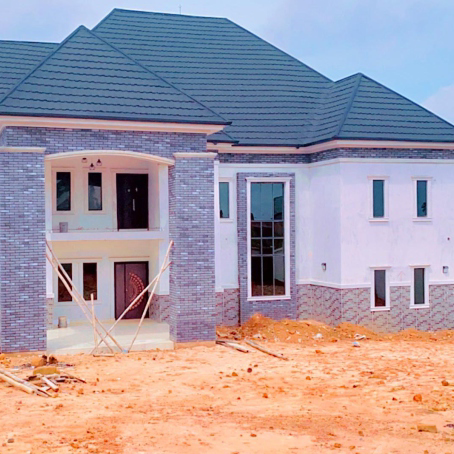
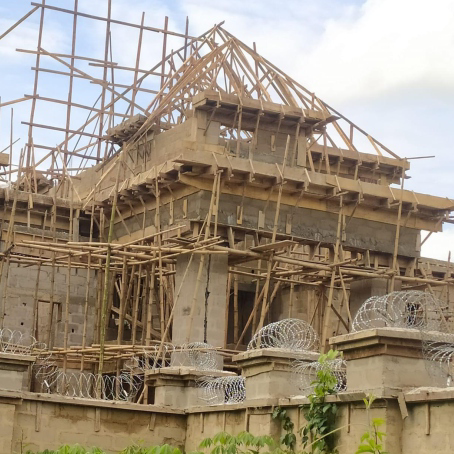
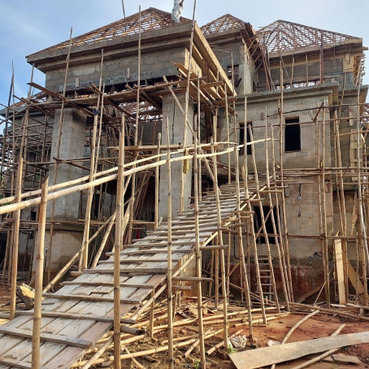
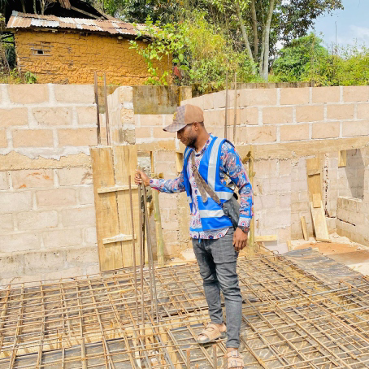
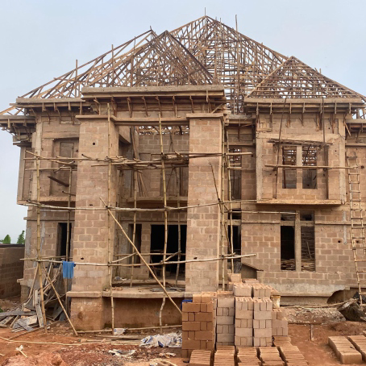
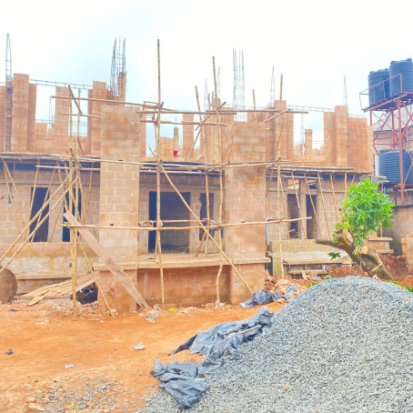

01 / Exterior & Roofing
Residential exterior
Roofing and exterior works from the company profile.


Our Projects
A closer look at residential construction, site supervision, and building delivery, documented in the SEOARC company profile.
Selected Work
These photographs show our work at different stages of delivery, from site activities to roofing and exterior works.

Roofing and exterior works from the company profile.
Timber roof framing and ongoing residential construction.

Building works with temporary scaffolding and site access.

On-site supervision during reinforced concrete works.

Residential roof framing and construction activities.

Building construction documented in the company profile.
All portfolio photographs on this page are from the SEOARC company profile.
Let's Build Together
Tell us about your site, the spaces you need, and the outcome you want to achieve.